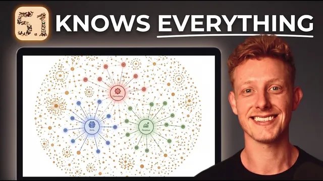

Fable 5.1으로 세컨드 브레인 만들기 (세팅 간단)

원본 영상 보기 →
- 결과의 질은 맥락을 채우는 시간에 달렸어요
- cloud.md는 지도예요
- 로컬 예약 작업과 클라우드 루틴은 달라요
한 줄 요약
컴퓨터 폴더 하나에 텍스트 파일로 사업 맥락을 모은 '제2의 뇌'를, 세 가지 무료 스킬(설정·운영자·최적화)과 Fable 5.1로 만들고, 실시간으로 갱신하며, 데이터가 커져도 최적화 상태를 유지하는 전 과정을 안내합니다.
전체 내용 정리
제2의 뇌는 그냥 폴더 하나예요
'제2의 뇌'는 사실 컴퓨터 안의 폴더 하나입니다. AI 도구가 나와 사업에 관한 최신 맥락을 항상 파악하도록 돕는 마크다운 파일들의 모음이에요.
발표자 Ben은 전략·팀·지금까지 만든 모든 유튜브 영상·모든 영업 리드 이력에 관한 문서를 여기에 둡니다. Claude Code나 Codex, cowork 같은 AI 도구에서 이 폴더에 접근 권한을 주면, 에이전트로 작업하거나 자동화할 때 최신 맥락을 가져와 훨씬 나은 결과를 내요.
한 번 구축하면 모든 팀원의 AI 도구가 즉시 더 강력해지고 사업 방향과 일치하게 됩니다.
폴더 안 파일들이 금방 지저분해지기 때문에 Obsidian 같은 도구로 시각화하고 문서 간 연결을 그래프 뷰로 보는데, '제2의 뇌'라는 개념이 여기서 비롯됐어요. 'AI OS'라고 부르기도 하고요.
Fable 5.1처럼 방대한 맥락을 처리하는 모델과 함께하면 더 강력해집니다. 예를 들어 "내 제2의 뇌에 들어가서 사업의 성장 궤적을 분석해 줘"라고 하면, 컨텍스트 파일 225개를 검토한 뒤 올해 성과, 올해 내린 모든 결정, 실제로 고수한 것과 놓친 것, 해결한 병목을 담은 대시보드 리포트를 줘요.
세 가지 무료 스킬
설명란 첫 링크에서 무료로 받을 수 있습니다.
- 설정 스킬 — 모범 사례에 따라 초기 세팅
- 운영자 스킬 — 제2의 뇌가 실시간 정보로 항상 업데이트되도록 관리
- 최적화 스킬 — 데이터가 늘어나도 최적화 상태 유지
최적화에는 Fable 5.1이 특히 도움이 돼요.
설정: 네 단계
- 컴퓨터에 제2의 뇌가 저장될 간단한 폴더를 만듭니다
- AI 도구에서 '폴더 추가'를 클릭해 새 폴더를 만들고 이름을 'second brain'으로 짓습니다
- 그 폴더가 선택돼 있는지 확인합니다
/setup스킬을 사용합니다
세 스킬 세트는 플러그인 대신 zip 파일로 무료 제공되니, '사용자 지정 → 플러그인 → 추가 → 플러그인 업로드'로 올린 뒤 /setup을 입력하면 됩니다. 설정에는 토큰을 낭비할 수 있으니 Fable 5.1을 권하지 않고 Opus 5로도 충분해요.
설정 스킬은 세 가지를 합니다. 당신과 사업에 관한 초기 컨텍스트를 채우고, 폴더 안에 하위 폴더 구조를 잡고, 모범 사례에 따라 cloud.md 파일을 자동 생성해요.
cloud.md가 중요합니다. 폴더 루트의 텍스트 파일이지만, 제2의 뇌의 모든 파일과 AI 에이전트 사이의 지도 역할을 해서 에이전트가 어떤 정보를 어디서 찾을지 알게 해줘요. 라우팅 테이블이 들어 있고, 에이전트는 질문을 받으면 항상 cloud.md를 먼저 읽습니다.
맥락 채우기가 핵심이에요
스킬을 실행하면 개인용인지 팀용인지 묻고, 초기 인프라 구축에 몇 분이 걸린 뒤 12가지 주제(개인, 회사, 목표 시장, 판매 상품 등)에 대한 컨텍스트를 요청합니다.
이 세팅의 핵심은 시간을 들여 이 내용을 채우는 거예요.
WhisperFlow 같은 음성 녹취 도구로 각 주제의 모든 세부 내용을 최대한 상세히 말하는 방식을 추천하며, 한두 시간 투자할 가치가 있습니다. 한 번 해 두면 AI 도구가 영원히 더 강력해지거든요.
두 번째 입력란에는 해당 주제의 정보를 찾을 수 있는 소프트웨어를 지정하고(영업·제안 정보는 CRM 같은 식으로요), 사용자 지정 탭에서 그 커넥터가 실제로 연결됐는지 확인합니다. 세 번째로 각 주제의 관련 문서·파일·프레젠테이션을 직접 업로드할 수도 있어요.
그러면 AI가 제공한 정보를 바탕으로 마크다운 파일들을 생성하고 하위 폴더를 정리하며 cloud.md를 만듭니다.
이후 어떤 AI 서비스를 쓰든 새 대화를 시작할 때마다 같은 제2의 뇌 폴더에 접근 권한을 주는 습관을 들이면, 맥락이 빠르게 쌓이고 결과물이 계속 좋아져요.
폴더 보기 도구: Obsidian 또는 Balda
복잡한 폴더를 살펴보고 정리하는 도구로 인기 있는 Obsidian을 써도 되지만, 발표자는 내부에서 만든 무료 앱 Balda를 추천합니다. Obsidian이 제2의 뇌로서 가진 한계, 특히 팀 단위 활용을 해결하려고 만들었어요.
balda.com에서 무료로 받아 설치한 뒤 '기존 파일 열기'를 클릭하고 제2의 뇌 폴더를 선택하면, 모든 파일을 더 보기 좋게 확인할 수 있고 Obsidian과 같은 그래프 뷰와 위키 링크도 제공합니다.
이 앱이 AI 에이전트에 추가 혜택을 주는 건 아니에요(에이전트는 폴더 내 파일을 직접 읽습니다). 앱은 당신과 팀을 위한 도구예요.
만든 가장 큰 이유는 팀 공유가 쉽기 때문입니다. 설정의 멤버 탭에서 팀원을 이메일로 초대하면, 팀원이 앱을 설치하고 로그인한 순간 제2의 뇌 전체가 그의 컴퓨터와 Balda 앱에 동기화되고 이후 변경 사항도 즉시 반영돼요. 특정 파일이나 하위 폴더별 권한도 쉽게 설정할 수 있고요.
운영자 스킬: 매일 자동 갱신
다음 단계는 소프트웨어의 최신 정보를 항상 업데이트해 AI 도구가 나와 사업 주변에서 일어나는 일을 늘 파악하게 하는 겁니다. 운영자 스킬이 이를 위한 예약 작업과 루틴을 설정해 줘요.
예로 매일 모든 커넥터를 검토해 팀 회의 기록과 영업 통화 내용, 최신 Slack 스레드, 커뮤니티 게시물, 이메일 받은편지함을 가져와 제2의 뇌를 갱신합니다.
일일 하위 폴더에 그날의 비즈니스 요약 파일과 링크가 담기고, 이메일·회의·제안서 소프트웨어를 바탕으로 각 리드의 상태를 업데이트해요. 새 정보를 추가할 뿐 아니라 변경 사항에 따라 기존 파일을 수정하고, 갱신 후 불필요한 파일은 삭제합니다.
/operator 스킬은 실행 주기(최소 하루 한 번 권장)와 데이터를 가져올 소프트웨어를 물어요. 최소한 회의 기록 도구는 포함하고, 이메일·Slack 같은 소통 플랫폼과 CRM을 추가할 수 있습니다.
노트북이 꺼져 있어도 돌아가게
예약 작업은 노트북이 켜져 있을 때만 실행되는 한계가 있어요.
확실하게 갱신하려면 코드 탭 → 루틴 → '새 루틴' → '클라우드'를 선택합니다. 루틴은 클라우드에서 실행되므로 노트북이 닫혀 있어도 작동해요.
한 가지 더 할 일이 있습니다. 루틴이 클라우드에서 돌기 때문에 로컬 폴더에 접근할 수 없으니 제2의 뇌를 커넥터로 만들어야 해요. 이게 Balda를 직접 만든 큰 이유 중 하나인데, Obsidian은 커넥터 추출이 까다롭지만 Balda에는 이 과정을 쉽게 만드는 기능이 있습니다.
Balda에서 볼트 설정 → MCP → 엔드포인트 URL 복사 → 사용자 지정 탭 → 커넥터 → 새 사용자 지정 커넥터 추가 → 링크 붙여넣기 → 이름 지정하면 돼요. 이후 Balda 앱이 나타나면 '연결'을 클릭하고, 브라우저에서 계정에 로그인해 특정 폴더를 선택하면 그 폴더가 커넥터로 연결됩니다.
최적화 스킬: 커진 맥락 정리
제2의 뇌를 많이 쓰고 예약 작업과 컨텍스트가 늘면 맥락이 방대해집니다. 그러면 효율성이 떨어져 토큰 비용이 늘고 AI가 느려지며 관련 없는 맥락을 쓰거나 중복·상충 정보가 생겨요.
그래서 늘어나는 맥락을 정기적으로 감사하고 최적화해야 하고, 옵티마이저 스킬이 이를 돕습니다. Fable 5.1이 특히 강력한 영역이에요.
발표자가 Fable 5.1로 옵티마이저를 실행하자 822개 폴더의 마크다운 파일 5,400개를 감사해 문제와 비효율을 찾아 수정하고 전체 대시보드를 제공했습니다. 그의 경우 5,400개 파일에서 56개의 잠재적 문제를 찾아 26개 수정을 적용했고, 무엇이 실패했고 무엇을 복구·개선·재작성·이동·복원했는지 개요를 보여 줬어요.
이 스킬은 Andrej Karpathy 등 여러 사람이 방대한 맥락과 메모리를 유지·최적화하는 프레임워크를 하나로 통합한 겁니다. 최소 격주로 실행하고 예약 작업으로 걸어 둬도 좋아요.
팀 운영
세 가지를 설정하고 꾸준히 실행하면 상위 1%보다 나은 제2의 뇌를 갖게 됩니다.
팀 단위라면 한 사람을 지정해 제2의 뇌를 관리하고 최적화 스킬로 최신 문맥을 유지하게 하는 것을 강력히 추천해요. Balda 앱을 쓰면 이메일로 초대하고, 팀원이 설치·로그인 후 코드를 입력하면 제2의 뇌 전체가 추가되며 실시간 동기화됩니다. 특정 폴더나 문서는 비공개나 읽기 전용으로 권한을 걸 수 있고요.
핵심 인사이트
- 결과의 질은 맥락을 채우는 시간에 달렸어요: 설정 스킬이 12개 주제를 묻는 이유가 여기 있습니다. 음성으로 한두 시간 상세히 말해 넣으면, 이후 모든 AI 대화의 출력이 영구적으로 좋아져요.
- cloud.md는 지도예요: 제2의 뇌의 모든 파일과 에이전트를 잇는 라우팅 테이블입니다. 에이전트가 매번 먼저 읽으므로, 정보를 쌓는 것만큼 "어디에 뭐가 있는지"를 명시하는 게 중요해요.
- 로컬 예약 작업과 클라우드 루틴은 달라요: 예약 작업은 노트북이 켜져 있어야만 돌아갑니다. 매일 확실히 갱신하려면 제2의 뇌를 커넥터로 만들고 클라우드 루틴으로 옮겨야 해요.
- 커진 맥락은 부채가 됩니다: 파일이 수천 개로 늘면 속도·비용·정확도가 모두 나빠져요. 감사와 최적화를 격주 루틴으로 걸어야 시스템이 계속 작동합니다.
오늘 당장 해볼 것
- 컴퓨터에 'second brain' 폴더를 만들고 AI 도구에서 접근 권한을 준 뒤, "우리 사업·고객·상품·목표를 정리한 초기 컨텍스트 파일들을 만들고, 루트에 무엇이 어디 있는지 알려 주는 지도 파일을 만들어 줘"라고 요청해 보세요.
- 음성 녹취 도구를 켜고 회사·고객층·상품·올해 목표 네 주제를 각 10~15분씩 말해 그 폴더에 텍스트로 저장하세요. 완벽한 문장이 아니어도 상세할수록 좋습니다.
- 예약 작업으로 "매일 오전, 회의 기록·이메일·메신저에서 새 내용을 가져와 이 폴더의 해당 파일을 갱신하고 그날 요약을 남겨 줘"를 걸어 두세요. 2주 뒤에는 "이 폴더에서 중복·오래된·상충하는 파일을 찾아 정리안을 알려 줘"를 한 번 더 실행하시고요.